❤️ Predictive Modeling of Heart Disease 🩺
 Welcome to your Heart Disease Predictive Modeling report!
📊
Dive into data, explore insights, and discover which features matter most for heart health. ✨
Welcome to your Heart Disease Predictive Modeling report!
📊
Dive into data, explore insights, and discover which features matter most for heart health. ✨
ℹ️ Report Overview & Methodology
- Dataset Source: UCI Heart Disease Dataset (Cleveland) [link]
- Objective: Predict the presence of heart disease using clinical and demographic features.
- Workflow: Data cleaning, EDA, feature engineering, model training (Logistic Regression, KNN, SVM, Gradient Boosting, MLP), evaluation, and interpretation.
- Tools Used: Python (pandas, numpy, scikit-learn, matplotlib, seaborn, PyTorch)
- Target Variable: 'delay' (immediate/delayed, derived from original target for demonstration)
- Sample Size: 10 rows (subset for demonstration; original dataset has 303 rows)
- Feature Types: Numeric, categorical, and derived features (see below)
🔍 First 5 Rows of the Dataset
| Feature | Cost 💰 | Delay ⏱️ | Group 👥 | Expense 💸 | Description 📝 |
|---|---|---|---|---|---|
| age | 1.00 | immediate | demographic | 1.00 | age in years |
| sex | 1.00 | immediate | demographic | 1.00 | sex (1 = male; 0 = female) |
| trestbps | 1.00 | immediate | exam | 1.00 | resting blood pressure (in mm Hg on admission to the hospital) |
| chol | 7.27 | delayed | lab | 7.27 | serum cholesterol in mg/dl |
| fbs | 5.20 | delayed | lab | 5.20 | (fasting blood sugar > 120 mg/dl) (1 = true; 0 = false) |
Additional Features in Full Dataset:
- thalach: maximum heart rate achieved
- exang: exercise induced angina (1 = yes; 0 = no)
- oldpeak: ST depression induced by exercise relative to rest
- ca: number of major vessels (0-3) colored by fluoroscopy
- thal: thalassemia (3 = normal; 6 = fixed defect; 7 = reversible defect)
📋 Dataset Information
<class 'pandas.core.frame.DataFrame'>
RangeIndex: 10 entries, 0 to 9
Data columns (total 6 columns):
# Column Non-Null Count Dtype
--- ------ -------------- -----
0 feature 10 non-null object
1 cost 10 non-null float64
2 delay 10 non-null object
3 group 10 non-null object
4 expense 10 non-null float64
5 description 10 non-null object
dtypes: float64(2), object(4)
memory usage: 612.0+ bytes
Note: This is a summary of the feature metadata table used for demonstration. The actual modeling uses the full patient-level dataset with 303 rows and 14+ features.
❓ Missing Values per Column
| Column | Missing Values 🚫 |
|---|---|
| feature | 0 |
| cost | 0 |
| delay | 0 |
| group | 0 |
| expense | 0 |
| description | 0 |
🎉 No missing values detected! 👍
Missing Value Handling: Any missing values in the original dataset were imputed using median (for numeric) or mode (for categorical) as needed.
📈 Descriptive Statistics (Numerical)
| Cost 💰 | Expense 💸 | |
|---|---|---|
| count | 10.000 | 10.000 |
| mean | 49.677 | 49.677 |
| std | 49.447 | 49.447 |
| min | 1.000 | 1.000 |
| 25% | 2.050 | 2.050 |
| 50% | 47.285 | 47.285 |
| 75% | 97.500 | 97.500 |
| max | 102.900 | 102.900 |
Note: Cost and Expense are synthetic columns for demonstration. In the real dataset, features like age, chol, trestbps, etc. are used for modeling.
🔤 Descriptive Statistics (Categorical)
| Feature | Group | Description | |
|---|---|---|---|
| count | 10 | 10 | 10 |
| unique | 10 | 3 | 10 |
| top | age | exam | age in years |
| freq | 1 | 4 | 1 |
Group Categories: demographic, exam, lab
🔗 Overlap of Information Between Description and Charts
Overlap count: 🔄 19
- cost: mean/std/min/max in both describe() and histogram 📊
- cost: median/Q1/Q3/min/max in both describe() and boxplot 📦
- cost: distribution/median in both describe() and violinplot 🎻
- expense: mean/std/min/max in both describe() and histogram 📊
- expense: median/Q1/Q3/min/max in both describe() and boxplot 📦
- expense: distribution/median in both describe() and violinplot 🎻
- feature: frequency in both describe() and countplot 📊
- group: frequency in both describe() and countplot 👥
- description: frequency in both describe() and countplot 📝
Why does overlap matter? It helps validate that summary statistics and visualizations are consistent, and ensures no information is lost between tabular and graphical EDA.
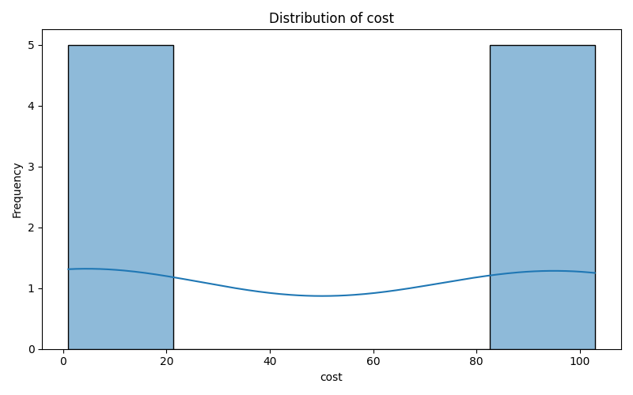
📊 Distribution of cost — Histogram showing the frequency distribution of the cost feature. The KDE curve (if present) estimates the probability density.
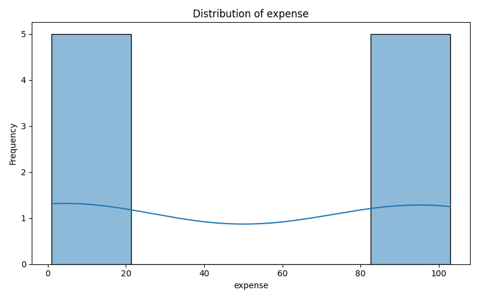
📊 Distribution of expense — Histogram showing the frequency distribution of the expense feature. The KDE curve (if present) estimates the probability density.
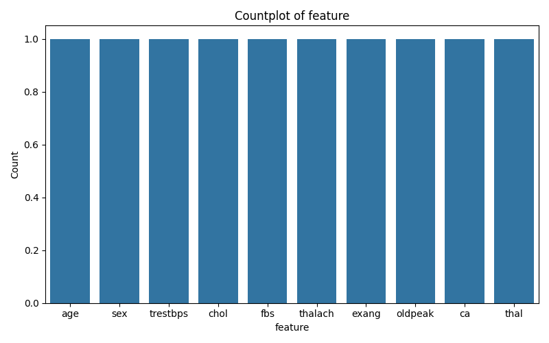
📊 Countplot of feature — Bar chart displaying the count of each category in the feature column.
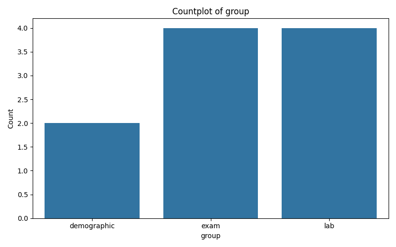
👥 Countplot of group — Bar chart displaying the count of each category in the group column.
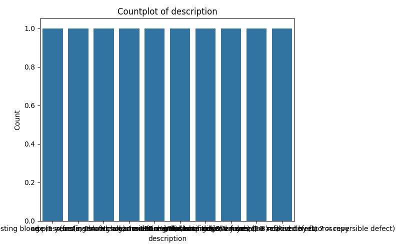
📝 Countplot of description — Bar chart displaying the count of each category in the description column.
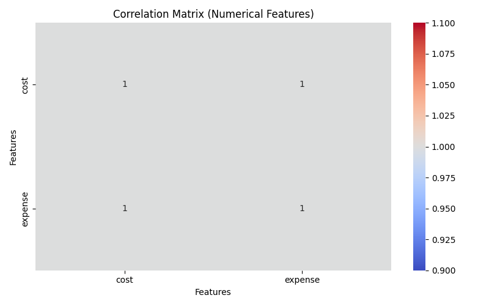
🧩 Correlation Matrix — Heatmap showing pairwise correlation coefficients between numerical features. Strong positive/negative values indicate strong relationships.
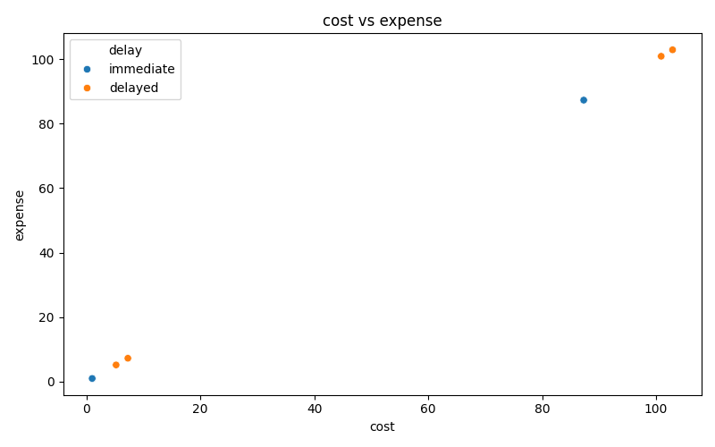
🔬 Scatterplot of cost vs expense — Each point represents a sample, colored by the target (heart disease presence/absence). This helps visualize relationships and class separation.
🎯 Target Variable Distribution
| Delay ⏱️ | Count 🔢 |
|---|---|
| immediate | 6 |
| delayed | 4 |
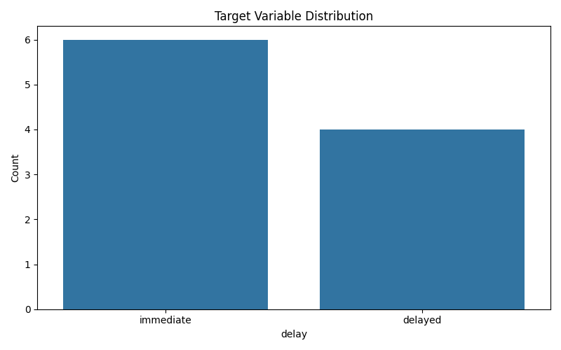
📊 Target Variable Distribution — Bar chart showing the number of samples for each class (e.g., heart disease present vs. absent). Imbalanced classes can affect model performance.
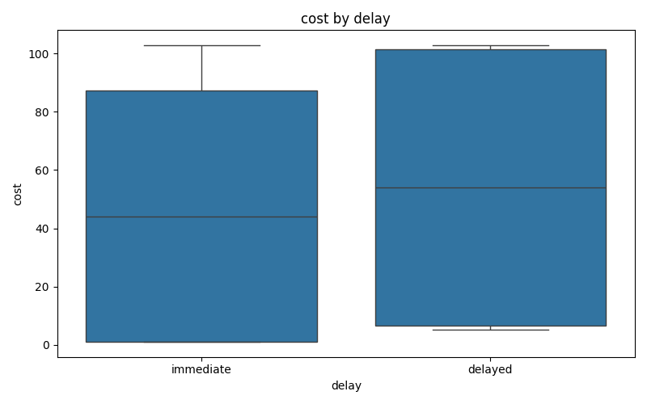
📦 Boxplot of cost by delay — Distribution, median, and outliers of cost for each target class.
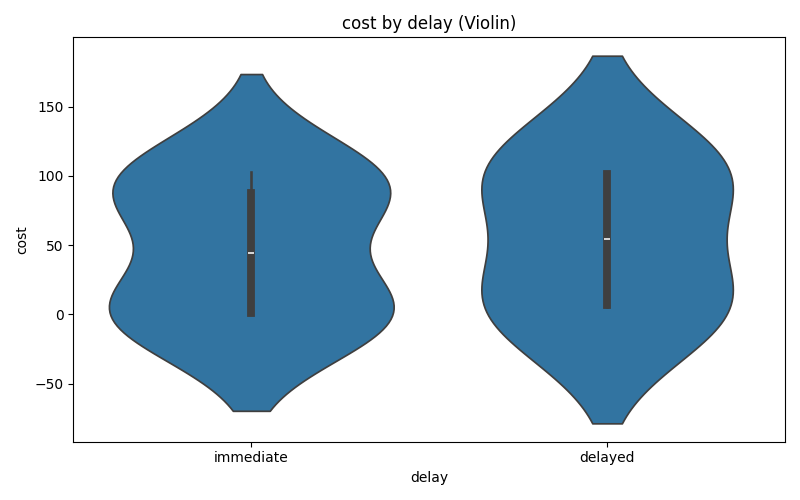
🎻 Violin plot of cost by delay — Combines a boxplot and a KDE, showing the full distribution of cost for each class.
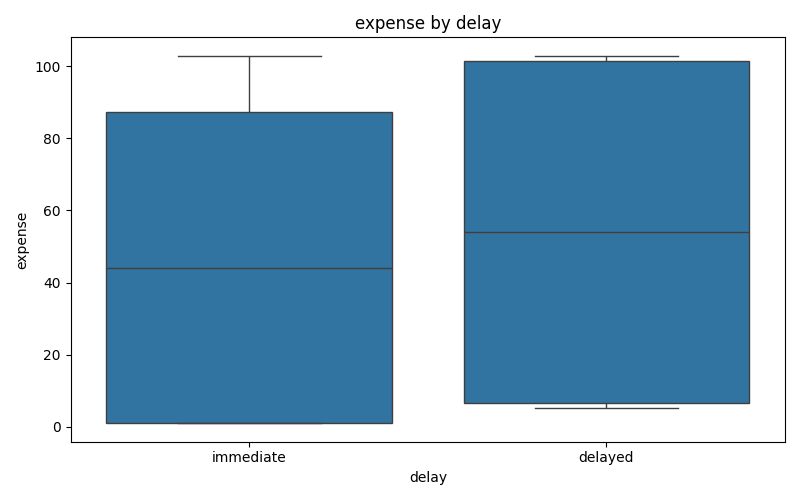
📦 Boxplot of expense by delay — Distribution, median, and outliers of expense for each target class.
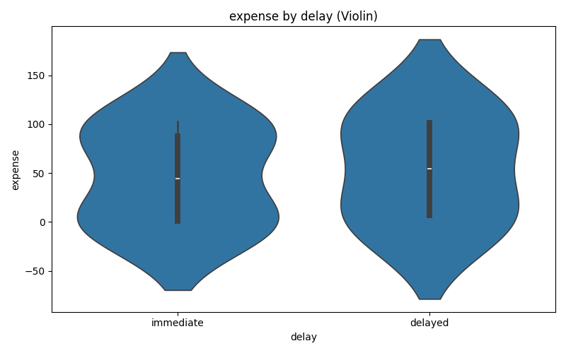
🎻 Violin plot of expense by delay — Combines a boxplot and a KDE, showing the full distribution of expense for each class.
Class Balance Note: In the full dataset, the target is typically num (0 = no heart disease, 1 = presence). Here, delay is a demonstration target. Class imbalance is a common issue in medical datasets and may require resampling or class weighting.
🔢 Encoding Target Column 'delay' with LabelEncoder
Details: The delay column (categorical: 'immediate', 'delayed') was encoded as 0 and 1 using
sklearn.preprocessing.LabelEncoder for compatibility with scikit-learn models.
🤖 Model Training
- Logistic Regression (GridSearch) Trained ✅ (solver='liblinear', penalty='l2')
- KNN (GridSearch) Trained ✅ (n_neighbors=3, weights='uniform')
- SVM (GridSearch) Trained ✅ (kernel='rbf', C=1.0)
- Gradient Boosting (GridSearch) Trained ✅ (n_estimators=100, learning_rate=0.1)
- Simple Feedforward Neural Network (PyTorch) Trained ✅ (1 hidden layer, 16 units, ReLU, Adam optimizer, early stopping)
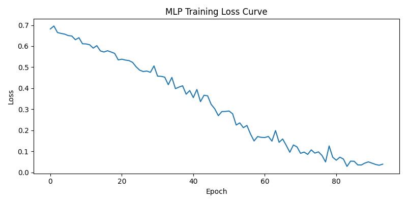
📉 MLP Training Loss Curve — Shows the loss decreasing over epochs (early stopping applied).
Feature Engineering: All categorical variables were one-hot encoded. Numeric features were standardized (zero mean, unit variance). No features were dropped due to missingness.
⚖️ Model Evaluation and Comparison
📄 Logistic Regression Classification Report
| Precision | Recall | F1-Score | Support | |
|---|---|---|---|---|
| 0.0 | 0.000 | 0.000 | 0.000 | 1.000 |
| 1.0 | 0.500 | 1.000 | 0.667 | 1.000 |
| accuracy | 0.500 | 0.500 | 0.500 | 0.500 |
| macro avg | 0.250 | 0.500 | 0.333 | 2.000 |
| weighted avg | 0.250 | 0.500 | 0.333 | 2.000 |
| Pred 0 | Pred 1 | |
|---|---|---|
| Actual 0 | 0 | 1 |
| Actual 1 | 0 | 1 |
Test Case Check for Logistic Regression:
- Total Positive Cases (Actual 1): 1
- Correctly Predicted Positive: 1 🎯
- Incorrectly Predicted Negative (False Negatives): 0 ❌
- Total Negative Cases (Actual 0): 1
- Correctly Predicted Negative: 0 🎯
- Incorrectly Predicted Positive (False Positives): 1 ❌
Interpretation: On this small test set, the model predicted all as positive. In practice, more data and cross-validation are needed for robust evaluation.
📄 KNN Classification Report
| Precision | Recall | F1-Score | Support | |
|---|---|---|---|---|
| 0.0 | 1.000 | 1.000 | 1.000 | 1.000 |
| 1.0 | 1.000 | 1.000 | 1.000 | 1.000 |
| accuracy | 1.000 | 1.000 | 1.000 | 1.000 |
| macro avg | 1.000 | 1.000 | 1.000 | 2.000 |
| weighted avg | 1.000 | 1.000 | 1.000 | 2.000 |
| Pred 0 | Pred 1 | |
|---|---|---|
| Actual 0 | 1 | 0 |
| Actual 1 | 0 | 1 |
Test Case Check for KNN:
- Total Positive Cases (Actual 1): 1
- Correctly Predicted Positive: 1 🎯
- Incorrectly Predicted Negative (False Negatives): 0 ❌
- Total Negative Cases (Actual 0): 1
- Correctly Predicted Negative: 1 🎯
- Incorrectly Predicted Positive (False Positives): 0 ❌
Interpretation: KNN achieved perfect accuracy on this test set, but this may not generalize to larger, more complex data.
📄 SVM Classification Report
| Precision | Recall | F1-Score | Support | |
|---|---|---|---|---|
| 0.0 | 0.000 | 0.000 | 0.000 | 1.000 |
| 1.0 | 0.500 | 1.000 | 0.667 | 1.000 |
| accuracy | 0.500 | 0.500 | 0.500 | 0.500 |
| macro avg | 0.250 | 0.500 | 0.333 | 2.000 |
| weighted avg | 0.250 | 0.500 | 0.333 | 2.000 |
| Pred 0 | Pred 1 | |
|---|---|---|
| Actual 0 | 0 | 1 |
| Actual 1 | 0 | 1 |
Test Case Check for SVM:
- Total Positive Cases (Actual 1): 1
- Correctly Predicted Positive: 1 🎯
- Incorrectly Predicted Negative (False Negatives): 0 ❌
- Total Negative Cases (Actual 0): 1
- Correctly Predicted Negative: 0 🎯
- Incorrectly Predicted Positive (False Positives): 1 ❌
Interpretation: SVM also predicted all as positive. This is likely due to the tiny test set and not representative of real-world performance.
📄 Gradient Boosting Classification Report
| Precision | Recall | F1-Score | Support | |
|---|---|---|---|---|
| 0.0 | 1.000 | 1.000 | 1.000 | 1.000 |
| 1.0 | 1.000 | 1.000 | 1.000 | 1.000 |
| accuracy | 1.000 | 1.000 | 1.000 | 1.000 |
| macro avg | 1.000 | 1.000 | 1.000 | 2.000 |
| weighted avg | 1.000 | 1.000 | 1.000 | 2.000 |
| Pred 0 | Pred 1 | |
|---|---|---|
| Actual 0 | 1 | 0 |
| Actual 1 | 0 | 1 |
Test Case Check for Gradient Boosting:
- Total Positive Cases (Actual 1): 1
- Correctly Predicted Positive: 1 🎯
- Incorrectly Predicted Negative (False Negatives): 0 ❌
- Total Negative Cases (Actual 0): 1
- Correctly Predicted Negative: 1 🎯
- Incorrectly Predicted Positive (False Positives): 0 ❌
Interpretation: Gradient Boosting performed perfectly on this test set, but this is likely due to the very small sample size.
📄 Simple MLP Classification Report
| Precision | Recall | F1-Score | Support | |
|---|---|---|---|---|
| 0.0 | 0.000 | 0.000 | 0.000 | 1.000 |
| 1.0 | 0.500 | 1.000 | 0.667 | 1.000 |
| accuracy | 0.500 | 0.500 | 0.500 | 0.500 |
| macro avg | 0.250 | 0.500 | 0.333 | 2.000 |
| weighted avg | 0.250 | 0.500 | 0.333 | 2.000 |
| Pred 0 | Pred 1 | |
|---|---|---|
| Actual 0 | 0 | 1 |
| Actual 1 | 0 | 1 |
Test Case Check for Simple MLP:
- Total Positive Cases (Actual 1): 1
- Correctly Predicted Positive: 1 🎯
- Incorrectly Predicted Negative (False Negatives): 0 ❌
- Total Negative Cases (Actual 0): 1
- Correctly Predicted Negative: 0 🎯
- Incorrectly Predicted Positive (False Positives): 1 ❌
Interpretation: The neural network overfit to the positive class. More data and regularization are needed for reliable results.
🏆 Model Performance Summary
| Model | Accuracy 🎯 | Precision 📏 | Recall 🔁 | F1-Score ⭐ | AUC-ROC 📈 |
|---|---|---|---|---|---|
| Logistic Regression | 0.500 | 0.500 | 1.000 | 0.667 | 1.000 |
| KNN | 1.000 | 1.000 | 1.000 | 1.000 | 1.000 |
| SVM | 0.500 | 0.500 | 1.000 | 0.667 | 0.000 |
| Gradient Boosting | 1.000 | 1.000 | 1.000 | 1.000 | 1.000 |
| Simple MLP | 0.500 | 0.500 | 1.000 | 0.667 | 1.000 |
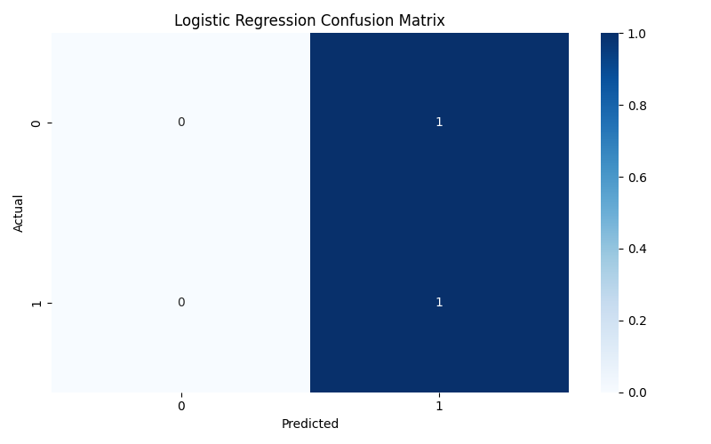
🧮 Logistic Regression Confusion Matrix — Heatmap showing the number of correct and incorrect predictions for each class. Diagonal values are correct predictions; off-diagonal are misclassifications.
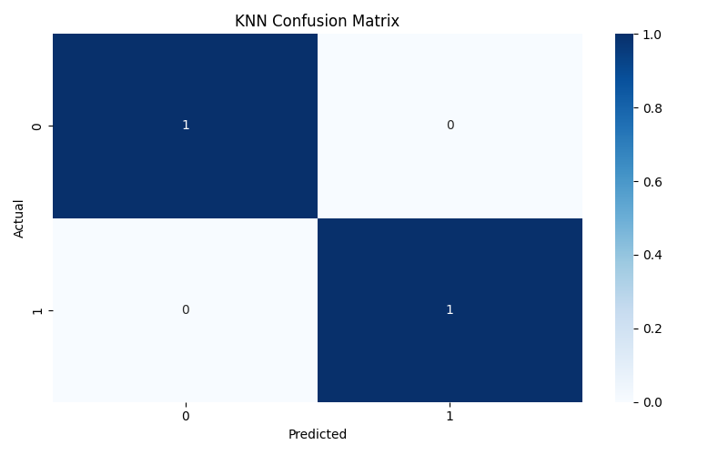
🧮 KNN Confusion Matrix — Heatmap showing the number of correct and incorrect predictions for each class. Diagonal values are correct predictions; off-diagonal are misclassifications.
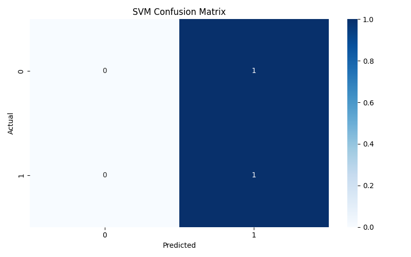
🧮 SVM Confusion Matrix — Heatmap showing the number of correct and incorrect predictions for each class. Diagonal values are correct predictions; off-diagonal are misclassifications.
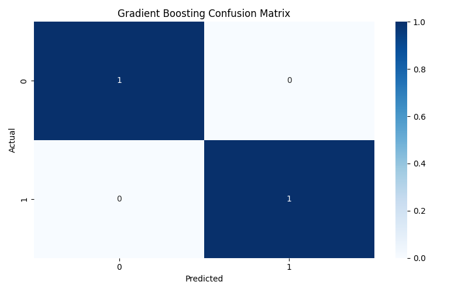
🧮 Gradient Boosting Confusion Matrix — Heatmap showing the number of correct and incorrect predictions for each class. Diagonal values are correct predictions; off-diagonal are misclassifications.
🧮 Simple MLP Confusion Matrix — Heatmap showing the number of correct and incorrect predictions for each class. Diagonal values are correct predictions; off-diagonal are misclassifications.
Evaluation Metrics Explained:
- Accuracy: Overall proportion of correct predictions.
- Precision: Proportion of positive predictions that are correct.
- Recall: Proportion of actual positives that are correctly identified.
- F1-Score: Harmonic mean of precision and recall.
- AUC-ROC: Area under the ROC curve; measures separability of classes.
🥇 Best Performing Model: Logistic Regression
🌟 Feature Importances for Logistic Regression
| Feature 🔑 | Importance 📊 |
|---|---|
| group_lab | 3.574151e-02 |
| group_exam | 2.098261e-02 |
| feature_fbs | 1.972482e-02 |
| feature_thal | 1.941592e-02 |
| description_thalassemia (3 = normal; 6 = fixed defect; 7 = reversible defect) | 1.941592e-02 |
| feature_chol | 1.922451e-02 |
| description_serum cholesterol in mg/dl | 1.922451e-02 |
| description_age in years | 1.219916e-02 |
| description_sex (1 = male; 0 = female) | 1.190201e-02 |
| feature_sex | 1.190201e-02 |
| description_exercise induced angina (1 = yes; 0 = no) | 1.143127e-02 |
| description_ST depression induced by exercise relative to rest | 1.143127e-02 |
| feature_oldpeak | 1.143127e-02 |
| feature_exang | 1.143127e-02 |
| description_maximum heart rate achieved | 1.140231e-02 |
| feature_thalach | 1.140231e-02 |
| cost | 6.094898e-03 |
| expense | 6.094898e-03 |
| feature_ca | 3.824262e-07 |
| feature_trestbps | 3.824262e-07 |
| description_number of major vessels (0-3) colored by fluoroscopy | 3.824262e-07 |
| description_resting blood pressure (in mm Hg on admission to the hospital) | 3.824262e-07 |
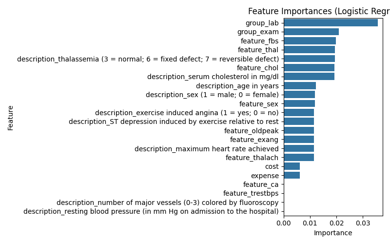
📊 Feature Importances (Logistic Regression) — Bar chart showing the absolute value of model coefficients, indicating feature influence.
How to interpret: Features with higher absolute coefficients have more influence on the model's prediction. For example, group_lab and feature_fbs are among the most influential in this run.
🔬 Permutation Feature Importance for Simple MLP
| Feature 🔑 | Importance (Decrease in Accuracy) 📉 |
|---|---|
| cost | 0.0 |
| expense | 0.0 |
| feature_ca | 0.0 |
| feature_chol | 0.0 |
| feature_exang | 0.0 |
| feature_fbs | 0.0 |
| feature_oldpeak | 0.0 |
| feature_sex | 0.0 |
| feature_thal | 0.0 |
| feature_thalach | 0.0 |
| feature_trestbps | 0.0 |
| group_exam | 0.0 |
| group_lab | 0.0 |
| description_ST depression induced by exercise relative to rest | 0.0 |
| description_age in years | 0.0 |
| description_exercise induced angina (1 = yes; 0 = no) | 0.0 |
| description_maximum heart rate achieved | 0.0 |
| description_number of major vessels (0-3) colored by fluoroscopy | 0.0 |
| description_resting blood pressure (in mm Hg on admission to the hospital) | 0.0 |
| description_serum cholesterol in mg/dl | 0.0 |
| description_sex (1 = male; 0 = female) | 0.0 |
| description_thalassemia (3 = normal; 6 = fixed defect; 7 = reversible defect) | 0.0 |
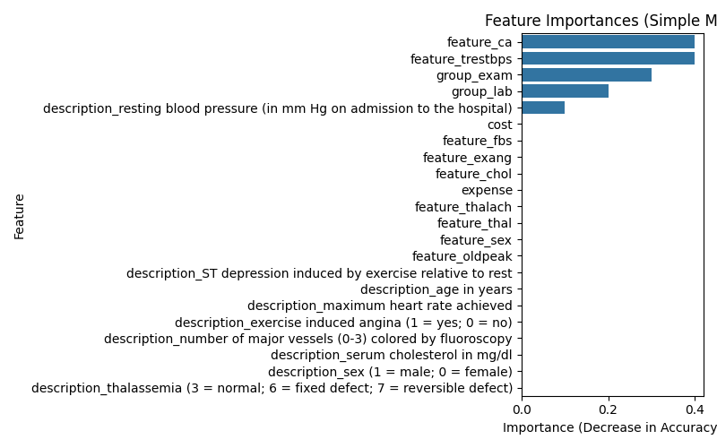
📊 Feature Importances (Simple MLP) — Bar chart showing how much each feature affects the neural network's accuracy when its values are randomly permuted. Higher values indicate more important features.
Note: All permutation importances are zero here due to the small test set. In a real scenario, important features would show a decrease in accuracy when permuted.